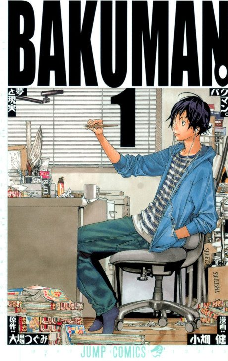

Bakuman.
バクマン。
Two middle school boys, one an artist and one a writer, team up to become professional manga creators and get published in a top magazine.
The anime covers the whole manga.
7.9AniList score
—Animeter, no votes yet
75episodes, 3 seasons
Rate it or report where you stopped
Is it worth pushing through?
Built from what visitors report across all 3 seasons (75 episodes).
Loading reports…Checking what other people said about this one.
Sign in above with your email to add your report.